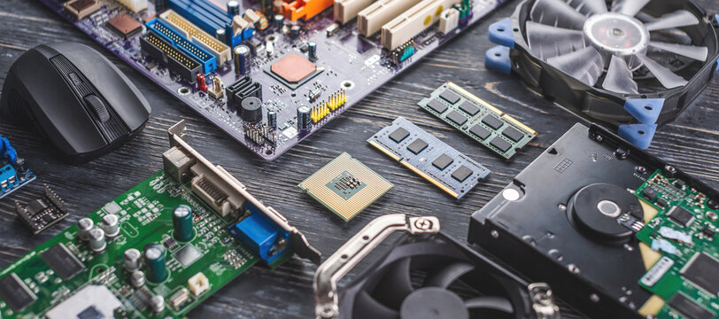
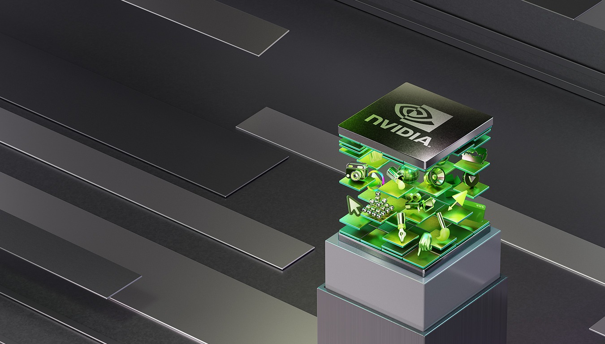
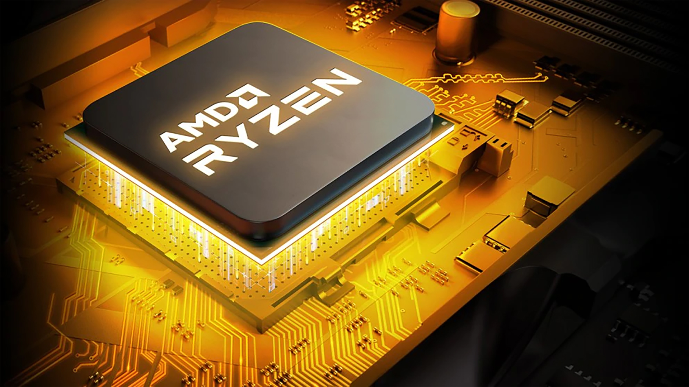

The Future of Computing
The field of computer hardware is evolving faster than at any point in history. Innovations in processors, memory, and storage are transforming the way we compute and interact with technology. From quantum chips to AI accelerators, the hardware powering our digital world is advancing at an unprecedented pace.
This project explores the key breakthroughs in modern computer hardware — their implications for industry and society, and the future trends defining the next era of computing.
What's Happening Now
NVIDIA Blackwell B200 — AI GPU Redefined
NVIDIA's Blackwell architecture delivers 2.5× the performance of Hopper for AI inference. The B200 SXM packs 192GB HBM3e at 8 TB/s bandwidth, enabling trillion-parameter model inference at unprecedented speeds.
AMD EPYC Turin — 192 Cores on a Single Socket
AMD's 5th-generation EPYC Turin server processor reaches 192 cores with 384MB L3 cache, built on TSMC N3 process. It claims leadership in every SPECrate benchmark category versus Intel Xeon.
Apple M4 Max — Mobile Chip Beats Desktop
Apple's M4 Max achieves 40% better performance-per-watt than the best x86 laptop competitors in SPEC benchmarks. The 3nm chip integrates a 40-core GPU and 32-core Neural Engine in one unified die.
IBM Condor: 1,121-Qubit Quantum Processor
IBM's Condor quantum processor marks the first time a gate-based quantum system has surpassed 1,000 qubits. IBM's roadmap targets fault-tolerant quantum advantage by 2029 in chemistry and optimisation tasks.
Key Areas
Industry Leaders

